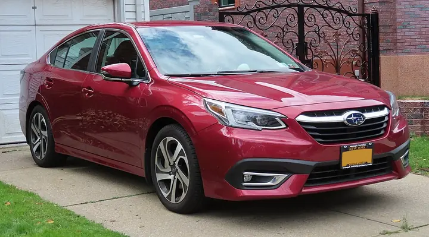
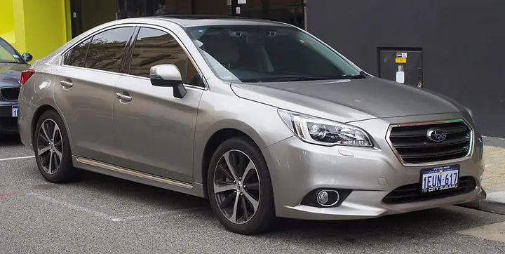
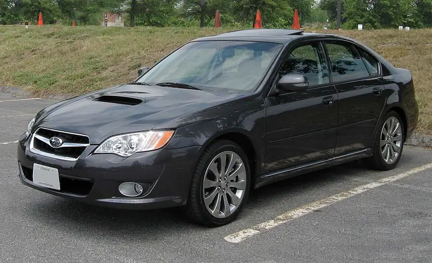
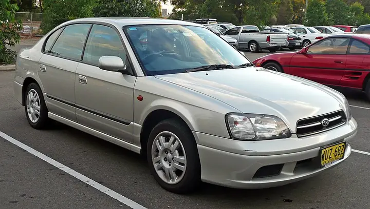
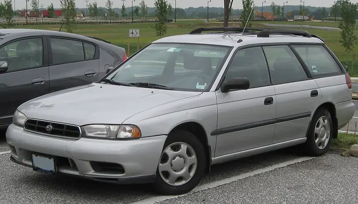
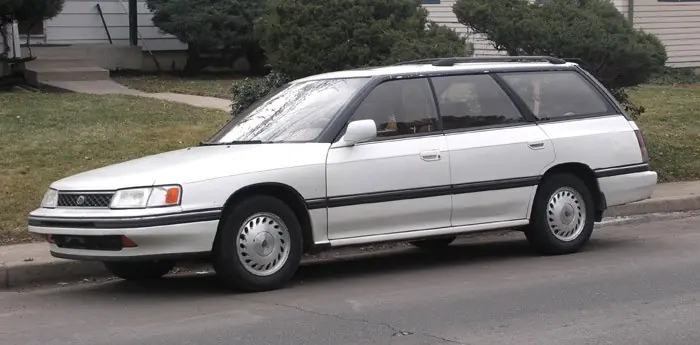

Subaru Legacy
Seventh generation (BW/BT; 2019) · 2019–2025
Abstract
This generation of the Subaru Legacy is a mid-size car, built July 2019 – September 2025 in United States: Lafayette, Indiana (SIA). Body styles: 4-door sedan. Layout: Front-engine, all-wheel-drive. This generation has its own article: Subaru Legacy (seventh generation).


1Specifications
| Production | July 2019 – September 2025 |
|---|---|
| Model years | 2020–2025 |
| Assembly | United States: Lafayette, Indiana (SIA) |
| Class | Mid-size car |
| Body style | 4-door sedan |
| Layout | Front-engine, all-wheel-drive |
| Platform | Subaru Global Platform |
| Engine | Gasoline:2.5 L 182 hp FB25 H42.4 L 260 hp FA24F H4-T |
| Transmission | Simulated 8-speed Lineartronic CVT |
| Wheelbase | 108.3 in |
| Length | 190.6 in (2020–2023)191.1 in (2023–2025) |
| Width | 72.4 in |
| Height | 59.1 in |
| Weight | 3491–3790 lb |
| Related | Subaru Outback (BT)Subaru Ascent |
| Predecessor | Subaru Legacy (BN) |
2Previous generations

_3.6R_sedan_(2017-07-15)_01.jpg){kind=link}
_2.5i_Sports_sedan_(2015-07-24)_01.jpg){kind=link}



_GX_sedan_(2010-05-04)_01.jpg){kind=link}




3Generation by generation
Length +7% from the first to the last
BC 19894,544 mm
BD 19934,595 mm
BE 19984,760 mm
BL 20034,699 mm
BM 20094,735 mm
BN 20144,796 mm
BW 20194,841 mm
Weight +8% from the first to the last
BC 19891,461 kg
BD 19931,422 kg
BE 19981,497 kg
BL 20031,315 kg
BM 20091,613 kg
BN 20141,661 kg
BW 20191,583 kg